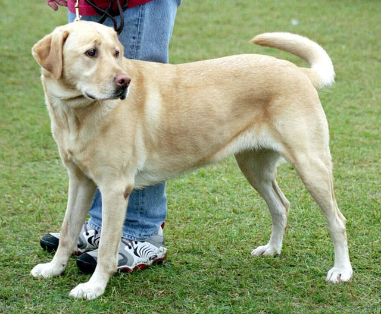

Dog Breeds
Labrador Retriever
- Positive reinforcement
- Rewarding your dog with treats, praise, and playtime when they display good behavior.
- Clicker training
- Using a clicker to mark desired behaviors and rewards to reinforce them.
- Retrieval training
- Teaching your dog to retrieve objects such as balls or toys.

German Shepherd
- Obedience training:
- Teaching your dog to follow commands such as sit, stay, and come.
- Socialization:
- Introducing your dog to new people, animals, and environments to prevent fear and aggression.
- Protection training:
- Training your dog to protect your property or family if needed.

Bulldog
Golden Retriever
Beagle
- Positive reinforcement: Using treats and praise to motivate your dog to learn new behaviors.
- Scent training: Teaching your dog to use their sense of smell to locate objects or people.
- Recall training: Teaching your dog to come when called, even in distracting environments.
Care
Proper care is important for a dog's health and happiness. This includes:
- Regular exercise
- Healthy diet
- Veterinary check-ups
- Grooming
Training
Training can help a dog learn good behavior and improve their relationship with their owner. Some common training techniques include:
- Positive reinforcement
- Clicker training
- Behavioral training